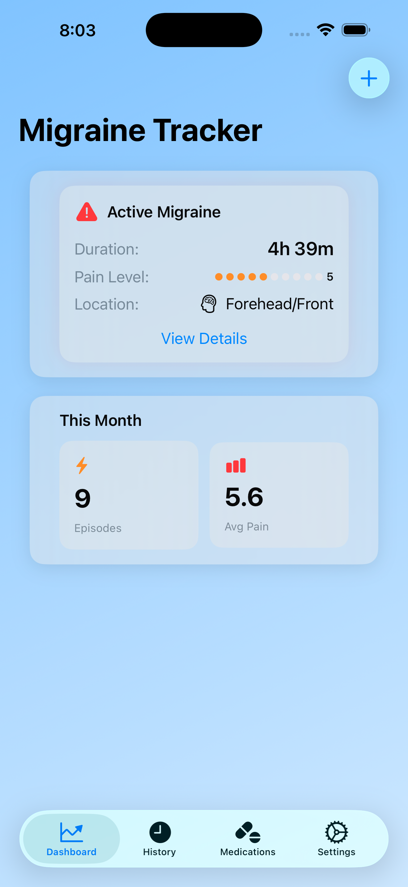
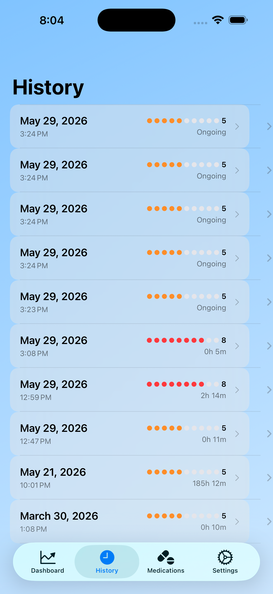
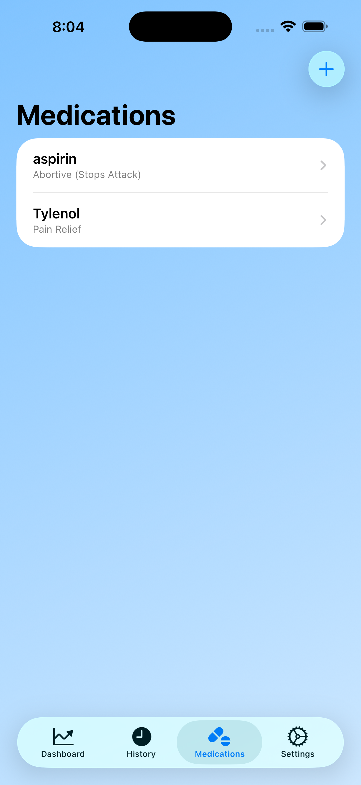
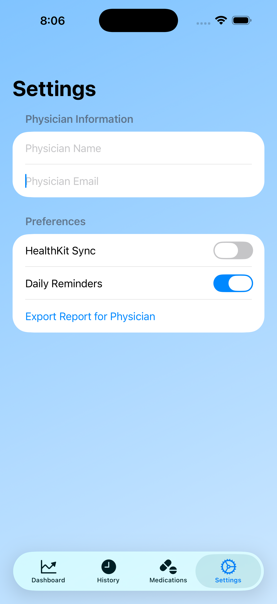
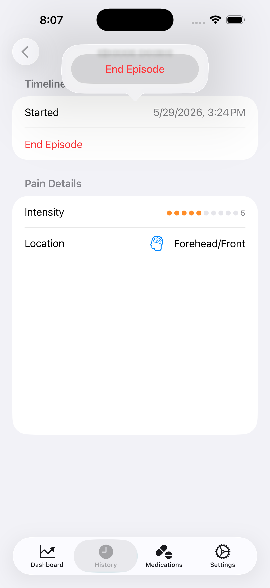

Monitor, manage, and understand your migraine patterns with ease.

The dashboard provides a quick snapshot of your current migraine status, duration, and pain level. It also summarizes monthly statistics, helping you visualize trends and identify triggers.

The history view lists all recorded episodes with timestamps, pain intensity ratings, and durations. This chronological log helps you track progress and share accurate data with healthcare providers.

Manage your medications effortlessly. Add new treatments, categorize them as abortive or preventive, and keep your regimen organized for better symptom control.

Customize your experience by syncing with HealthKit, setting daily reminders, and exporting reports for your physician. Personalization ensures your data works for you.

Dive deeper into each episode’s timeline, pain intensity, and location. The intuitive interface makes it easy to record and review your experiences for better long-term insights.